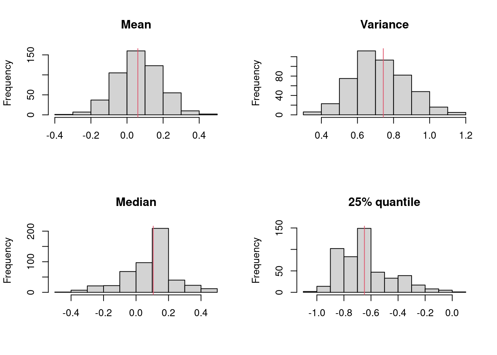

5 Kruskal Wallis
5.0.1 F test
\[\begin{equation} X_i ~ N(\mu_x, \sigma_x^2), iid\\ Y_j ~ N(\mu_y, \sigma_y^2), iid\\ X_i \text{independent of} Y_j \\ S_x^2 = \frac{1}{n-1}\sum_{i=1}^{n}(X_i -\bar{x})^2\\ S_y^2 = \frac{1}{m-1}\sum_{i=1}^{n}(Y_j -\bar{Y})^2\\ \bar{X} ~ N(\mu_x, \frac{\sigma^2}{n}) \\ \frac{(n-1)S_x^2}{\sigma_x^2} ~ X_{n-1}^2 \\ \bar{X} \perp \!\!\! \perp S_x^2 \\ \bar{Y} \sim N(\mu_y, \frac{\sigma_y^2}{m}) \\ \frac{(m-1)S_y^2}{\sigma_y^2} \sim X_{m-1}^2\\ \bar{Y} \perp \!\!\! \perp S_y^2\\ if V \sim X_p^2 and U \sim X_p^2, and U \perp \!\!\! \perp V, then W = \frac{V/p}{U/q} \sim F_(p,q) \\ H_0: \sigma_x = \sigma_y \\ \frac{S_x^2}{S_y^2} \sim F_{n-1,m-1} \end{equation}\]
n=30; m = 20; x= rnorm(n, mean = 0, sd= 2)
y = rnorm(m, mean = 1, sd= 1)
var.test(x,y)##
## F test to compare two variances
##
## data: x and y
## F = 6.2961, num df = 29, denom df = 19, p-value = 0.0001076
## alternative hypothesis: true ratio of variances is not equal to 1
## 95 percent confidence interval:
## 2.621241 14.048258
## sample estimates:
## ratio of variances
## 6.2960715.0.2 Ansari-Bradley
\[\begin{equation} \frac{X-\theta}{\eta_x} \overset{d}= \frac{Y-\theta}{\eta_y}\\ \eta_x: \text{scale parameters of G}; \\ \eta_y: \text{scale parameters of F}; \\ \gamma = \frac{\eta_x}{\eta_y} \\ H_0: \gamma^2 = 1 \end{equation}\]
x= c(111, 107, 100, 99, 102, 106, 109, 108, 104, 99,
101, 96, 97, 102, 107, 113, 116, 113, 110, 98)
y=c(107, 108, 106, 98, 105, 103, 110, 105, 104,
100, 96, 108, 103, 104, 114, 114, 113, 108, 106, 99)
summary(x)## Min. 1st Qu. Median Mean 3rd Qu. Max.
## 96.00 99.75 105.00 104.90 109.25 116.00summary(y)## Min. 1st Qu. Median Mean 3rd Qu. Max.
## 96.0 103.0 105.5 105.5 108.0 114.0par(mfrow=c(1,2)); rxy=range(x,y)
hist(x,xlab="x",xlim=rxy,las=1)
hist(y,xlab="y",xlim=rxy,las=1)
par(mfrow=c(1,2));
boxplot(x,xlab="x",ylim=rxy,las=1)
boxplot(y,xlab="y",ylim=rxy,las=1)
ansari.test(x,y)## Warning in ansari.test.default(x, y): cannot compute exact p-value with ties##
## Ansari-Bradley test
##
## data: x and y
## AB = 185.5, p-value = 0.1815
## alternative hypothesis: true ratio of scales is not equal to 1var.test(x,y)##
## F test to compare two variances
##
## data: x and y
## F = 1.3985, num df = 19, denom df = 19, p-value = 0.4717
## alternative hypothesis: true ratio of variances is not equal to 1
## 95 percent confidence interval:
## 0.5535337 3.5331806
## sample estimates:
## ratio of variances
## 1.3984765.0.3 Kruskal-Wallis
\[\begin{equation} y_{ik} = \theta + \tau_i + \epsilon_{ik} \\ i = 1,...,1,k=1,...,n_i; \\ \theta: \text{overall median}; \tau_i: \text{the i-th treatment effect}\\ \epsilon_{ik}: \text{iid from a continuous distribution with median 0} \end{equation}\]
x=c(2.9, 3.0, 2.5, 2.6, 3.2) # normal subjects
y=c(3.8, 2.7, 4.0, 2.4)#with obstructive airway disease
z=c(2.8, 3.4, 3.7, 2.2, 2.0) # with asbestosis
w=list(x,y,z)
w## [[1]]
## [1] 2.9 3.0 2.5 2.6 3.2
##
## [[2]]
## [1] 3.8 2.7 4.0 2.4
##
## [[3]]
## [1] 2.8 3.4 3.7 2.2 2.0kruskal.test(w)##
## Kruskal-Wallis rank sum test
##
## data: w
## Kruskal-Wallis chi-squared = 0.77143, df = 2, p-value = 0.685.1 Friedman Rank
Nonparametric version of two-way ANOVA. The collected data of an experimental design involves two factors, each at two or more levels, the treatment factor and blocking factor.
library(BSDA)## Loading required package: lattice##
## Attaching package: 'BSDA'## The following object is masked from 'package:datasets':
##
## Orangex=c(1.83,0.50,1.62,2.48,1.68,1.88,1.55,3.06,1.30);
y=c(0.878,0.647,0.598,2.05,1.06,1.29,1.06,3.14,1.29);
plot(x,y,las=1); abline(0,1)
xy=cbind(x,y); xy## x y
## [1,] 1.83 0.878
## [2,] 0.50 0.647
## [3,] 1.62 0.598
## [4,] 2.48 2.050
## [5,] 1.68 1.060
## [6,] 1.88 1.290
## [7,] 1.55 1.060
## [8,] 3.06 3.140
## [9,] 1.30 1.290axy=apply(xy,1,rank); axy## [,1] [,2] [,3] [,4] [,5] [,6] [,7] [,8] [,9]
## x 2 1 2 2 2 2 2 1 2
## y 1 2 1 1 1 1 1 2 1(rowMeans(axy)-3/2)^2## x y
## 0.07716049 0.07716049S=sum((rowMeans(axy)-3/2)^2)*12*9/6
S## [1] 2.777778pchisq(S,1,lower.tail=F)## [1] 0.0955807n=length(x); da=cbind(z=c(x,y),gr=c(rep(1,n),rep(2,n)),blk=rep(1:n,2))
da## z gr blk
## [1,] 1.830 1 1
## [2,] 0.500 1 2
## [3,] 1.620 1 3
## [4,] 2.480 1 4
## [5,] 1.680 1 5
## [6,] 1.880 1 6
## [7,] 1.550 1 7
## [8,] 3.060 1 8
## [9,] 1.300 1 9
## [10,] 0.878 2 1
## [11,] 0.647 2 2
## [12,] 0.598 2 3
## [13,] 2.050 2 4
## [14,] 1.060 2 5
## [15,] 1.290 2 6
## [16,] 1.060 2 7
## [17,] 3.140 2 8
## [18,] 1.290 2 9friedman.test(z~gr|blk,data=da)##
## Friedman rank sum test
##
## data: z and gr and blk
## Friedman chi-squared = 2.7778, df = 1, p-value = 0.09558test.stat=(sum(x>y)-n/2)/sqrt(n/4); t2=test.stat^2
c(2*pnorm(test.stat,lower.tail=F),t2,pchisq(t2,1,lower.tail=F))## [1] 0.0955807 2.7777778 0.0955807wilcox.test(x,y,paired=T)##
## Wilcoxon signed rank exact test
##
## data: x and y
## V = 40, p-value = 0.03906
## alternative hypothesis: true location shift is not equal to 05.2 Correlation
5.2.1 Pearson
5.2.2 Kendall
5.2.3 Spearman Rank
5.2.4 Cohen’s kappa
5.3 Comparing proportions in 2 X 2 tables
5.3.1 Large sample test procedures
5.3.2 2X2 Chi-Squared test of homogeneity
5.3.3 2X2 Chi-Squared test of independence
5.4 Relative Risk/Odds Ratio
5.4.1 Relative Risk
5.4.2 Odds
5.4.3 Example
5.4.4 Hypergeometric distribution
5.5 MH
5.5.1 Binomial coefficient
The number of unordered samples of y objects selected from n objects without replacement is
\[ {n \choose y} = \frac{n \times (n-1) \times (n-y-1)}{y!}) \\ = \frac{[n \times (n-1) \times (n-y+1)](n-1)!}{(n-1)!y!} \\ = \frac{n!}{(n-1)!y!}\]
5.5.2 Multinomial Distribution
5.6 McNemars
5.7 Stuart
5.8 Correlation
5.8.1 Pearson
5.8.2 Kendall
5.8.3 Spearman Rank
5.8.4 Cohen’s kappa
5.9 Friedman Rank
Nonparametric version of two-way ANOVA. The collected data of an experimental design involves two factors, each at two or more levels, the treatment factor and blocking factor.
library(BSDA)
x=c(1.83,0.50,1.62,2.48,1.68,1.88,1.55,3.06,1.30);
y=c(0.878,0.647,0.598,2.05,1.06,1.29,1.06,3.14,1.29);
plot(x,y,las=1); abline(0,1)
xy=cbind(x,y); xy## x y
## [1,] 1.83 0.878
## [2,] 0.50 0.647
## [3,] 1.62 0.598
## [4,] 2.48 2.050
## [5,] 1.68 1.060
## [6,] 1.88 1.290
## [7,] 1.55 1.060
## [8,] 3.06 3.140
## [9,] 1.30 1.290axy=apply(xy,1,rank); axy## [,1] [,2] [,3] [,4] [,5] [,6] [,7] [,8] [,9]
## x 2 1 2 2 2 2 2 1 2
## y 1 2 1 1 1 1 1 2 1(rowMeans(axy)-3/2)^2## x y
## 0.07716049 0.07716049S=sum((rowMeans(axy)-3/2)^2)*12*9/6
S## [1] 2.777778pchisq(S,1,lower.tail=F)## [1] 0.0955807n=length(x); da=cbind(z=c(x,y),gr=c(rep(1,n),rep(2,n)),blk=rep(1:n,2))
da## z gr blk
## [1,] 1.830 1 1
## [2,] 0.500 1 2
## [3,] 1.620 1 3
## [4,] 2.480 1 4
## [5,] 1.680 1 5
## [6,] 1.880 1 6
## [7,] 1.550 1 7
## [8,] 3.060 1 8
## [9,] 1.300 1 9
## [10,] 0.878 2 1
## [11,] 0.647 2 2
## [12,] 0.598 2 3
## [13,] 2.050 2 4
## [14,] 1.060 2 5
## [15,] 1.290 2 6
## [16,] 1.060 2 7
## [17,] 3.140 2 8
## [18,] 1.290 2 9friedman.test(z~gr|blk,data=da)##
## Friedman rank sum test
##
## data: z and gr and blk
## Friedman chi-squared = 2.7778, df = 1, p-value = 0.09558test.stat=(sum(x>y)-n/2)/sqrt(n/4); t2=test.stat^2
c(2*pnorm(test.stat,lower.tail=F),t2,pchisq(t2,1,lower.tail=F))## [1] 0.0955807 2.7777778 0.0955807wilcox.test(x,y,paired=T)##
## Wilcoxon signed rank exact test
##
## data: x and y
## V = 40, p-value = 0.03906
## alternative hypothesis: true location shift is not equal to 0